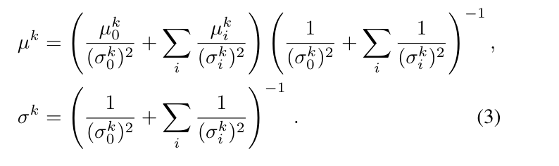
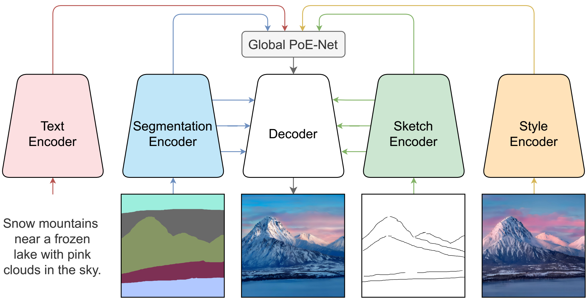
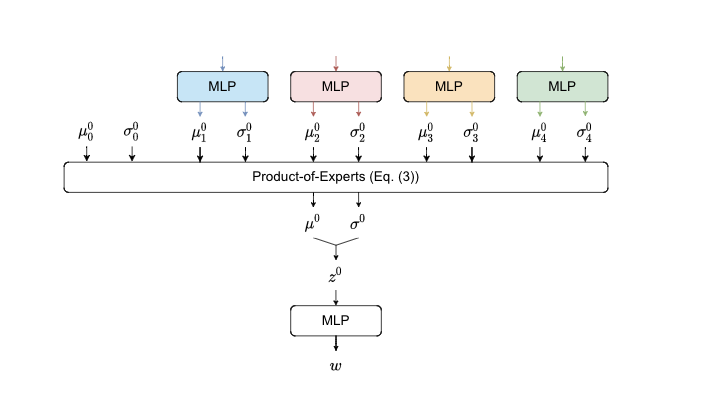
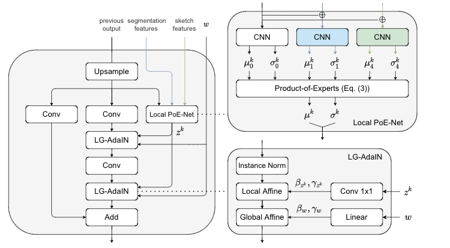
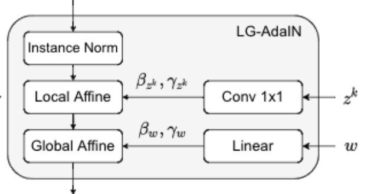
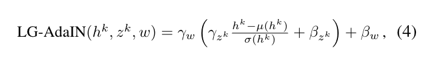
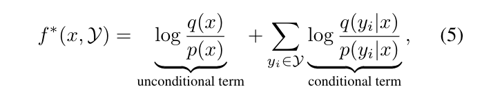
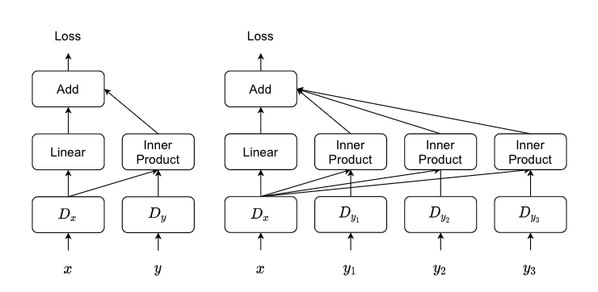
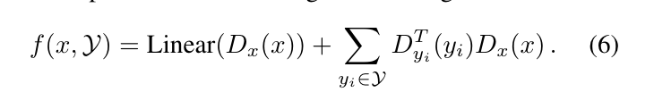

GanGANv2
Product-of-experts GANs
输入：
- 图像数据集x
- M个输入方式（多模态）
目标：
训练一个单一的操作模型，该模型可以学习在可能模式的任意子集\(\mathcal{Y}\)上捕获图像分布
在本文中，我们考虑了四种不同的模式:
文本text
语义分割segmentation
草图sketch
风格参照style reference
学习基于任何子数据的图像分布\(p(x\mid\mathcal{Y})\)是一项挑战
因为它需要一个生成器同时去建模\(2^M\)个分布
特别值得注意的是
当\(\mathcal{Y}\)是空集合时，生成器需要捕获无条件的图像分布
其他几种模态下的单独的条件分布
\(p(x|y_i) , \forall i \in \left\{1,2...M\right\}\)
例如，图像分布仅以文本为条件。这些设置在隔离单独中很受欢迎并得到了广泛的研究，我们的目标是将它们置于一个统一的框架下。
Product-of-experts modeling
直观地说，每个输入模态都增加了合成图像必须满足的约束。
满足所有约束的图像集是满足单个约束的图像集的交点
分布的乘积类似于集合的交集
如上图，我们通过一个强有力的假设对此进行建模
即联合条件概率分布\(p(x\mid y_i,y_j)\)与单条件概率分布\(p(x \mid y_i)\)和\(p(x \mid y_j)\)的乘积成正比
在此设置下，为了使product分布在某个区域具有高密度，每个单独的分布需要在该区域具有高密度，从而满足每个约束
通过相乘的方式组合多个分布（“experts”）以前被称为Product-of-experts
我们的生成器被训练用来将一个latent code z 映射到一个image x
因为输出的图像被latent code z 唯一的确定
所以评估\(p(x\mid\mathcal{Y})\)的问题可以等价为评估\(p(z\mid\mathcal{Y})\)的问题
我们使用Product-of-experts来对潜在(latent)条件分布进行建模 \[ p(z\mid\mathcal{Y}) \propto p'(z)\prod_{y_i\in \mathcal{Y}}q(z\mid y_i) \]
- \(p'(z)\)是先验概率分布
- 每个expert \(q(z\mid y_i)\)是编码器预测的单一模态的分布
当没有给出模式时，潜在分布只是先验分布。
随着提供更多的模式，约束的数量增加，可能输出图像的空间缩小，潜在分布变窄。
Multiscale and hierarchical latent space（多尺度层次潜在空间）
有一些我们考虑的模态是二维的，自然包含多个尺度的信息。
因此，我们设计了一个带有不同分辨率下的潜变量的hierarchical latent space（潜在层次空间）
这允许我们直接将信息从空间编码器的每个分辨率传递到潜在空间的相应分辨率，以便更好地保存高分辨率的控制信号
从数学上讲，我们的潜在代码z被分成若干组 \(z = (z^0 , z^1 ,z^2 ... z^N)\)
\(z^0 \in \mathbb{R}^{c_0}\) 是一个特征向量
\(z^k \in \mathbb{R}^{c_k\times r_k \times r_k}\) 是分辨率不断提高的特征图
$r_{k+1}= 2r_k , r_1 =4 $ \(r_N\)是图像分辨率
因此我们可以分解
- 先验概率分布\(p'(z)\)分解到\(\prod_{k=0}^N p'(z^k | z^{<k})\)
- expert \(q(z\mid y_i)\) 分解到\(\prod_{k=0}^N q(z^k | z^{<k} , y_i)\)
这种设计类似于等级VAE中的前后网络。不同之处在于，我们的编码器在输入模式中编码条件信息，而不是图像本身。根据潜在条件分布公式，我们假设每个分辨率的潜在条件分布是expert的产物 \[ p(z^k\mid z^{<k},\mathcal{Y}) \propto p'(z^k | z^{<k})\prod_{y_i\in \mathcal{Y}}q(z^k | z^{<k},y_i) \]
\(p'(z^k | z^{<k}) = \mathcal{N}(\mu_0^k,\sigma_0^k)\) 和 $q(z^k | z^{<k},y_i) =(_i^k,_i^k) $用神经网络参数化均值和标准差的独立高斯分布
可以证明 Product of gaussion experts 同样也是高斯分布 \(p(z^k\mid z^{<k},\mathcal{Y}) = \mathcal{N}(\mu^k,\sigma^k)\)

Generator architecture
1.Encoder

上图为生成器体系结构的概述。我们将每个模态编码成一个特征向量，然后在Global PoE-Net中进行聚合。
使用卷积网络(with input skip connections )对分割图seg和草图sketch进行编码
使用residual network对风格图style进行编码
使用CLIP去对文本text进行编码
附录B中给出了所有模态编码器的详细信息。
解码器使用Global PoE-Net的输出以及分割编码器和草图编码器的跳过连接生成图像
2.Global PoE-Net
\(\mu 和\sigma\)下标有0，1，2，3，4
0表示先验分布 1表示分割编码器 2表示文本编码器 3表示style编码器 4表示草图编码器

在Global PoE-Net中，我们使用MLP从每个模态中提取特征向量来预测一个高斯分布\(q(z^0|y_i)=\mathcal{N}(\mu_i^0,\sigma_i^0)\)
然后我们计算product of Gaussion包括$p'(z^0) = (_0^0,_0^0)=(0,I) $
并从product分布中采样得到\(z^0\)
然后用MLP将\(z^0\)转化为另一个特征向量\(w\)
3.Decoder

解码器主要有一堆残差块组成
Local-PoE-Net在当前分辨率下对潜在feature map \(z^k\)进行采样
当前分辨率下的product
\(p'(z^k | z^{<k}) = \mathcal{N}(\mu_0^k,\sigma_0^k)\) 特征图zk下的先验分布
\(q(z^k | z^{<k},y_i) = \mathcal{N}(\mu_i^k,\sigma_i^k)\) 特征图zk下不同模态的分布
\(\mu_0^k,\sigma_0^k\)根据最后一层的输出计算
\(\mu_i^k,\sigma_i^k\)通过连接最后一层的输出和相应模态的跳过连接来计算
请注意，只有具有跳过连接的模式(分割图和草图)对计算作出贡献
其他模式（文本和style参考）仅提供global信息，而不提供local细节。
local-PoE-net生成的潜在特征映射\(z^k\)和global-PoE-net生成的特征向量\(w\)被送到LG AdaIN层
本地全局自适应实例规范化(LG AdaIN)


\(h^k\)是在残差分支中通过一个卷积层得到的一个feature map
μ(hk) and σ(hk) 是通道平均值和标准差
\(\beta_{z^k} , \gamma_{z^k}\) 由\(z^k\)通过一个1x1卷积得到
\(\beta_{w} , \gamma_{w}\)由w计算得到
LG-AdaIN可以被看作AdaIN和SPADE的组合 采用全局特征向量和空间变化特征映射来调节激活。
Multiscale multimodal projection discriminator（多尺度多模投影鉴别器）
输入：
- image x
- 一系列的条件 \(\mathcal{Y}\)
输出：
一个分数\(D(x,\mathcal{Y}) = sigmoid(f(x,\mathcal{Y}))\)表明真实性
f的最优解是

我们假设给出x的不同模态下的条件独立,投影鉴别器（PD）（估计是一篇论文里的方法）建议使用内积来估计条件变量,他的实施将有条件的期限限制为,要相对简单，这会产生一个很好的归纳偏差，从而产生很强的实证结果。 
原始的PD
- 首先将图像和条件一起输入到一个shared latent space（潜在共享空间）
- 然后使用一个线性层来估计图像嵌入的无条件项（unconditional term）
- 并使用图像嵌入和条件嵌入之间的内积来估计条件项(conditional term)。
- 将无条件项和条件项相加，以获得最终的鉴别器的结果
相当于PD的推广
我们提出了一种多模态投影判别器，它将投影判别器推广到处理多个条件输入。与计算图像嵌入和条件嵌入之间的单个内积的标准投影判别器不同，我们为每个输入模态计算一个内积并将它们加在一起以获得最终损失。

\[ f(x,\mathcal{Y}) = Linear(D_x(x)) = \sum_{y_i \in \mathcal{Y}} D_{y_i}^T(y_i)D_x(x) \]
对于分割和草图等空间模式，在多个尺度下加强它们与图像的对齐更有效。
如图所示，我们将图像和空间模式编码为不同解决方案的特征图，并计算每个分辨率下的MPD损失。
我们计算每个位置和分辨率的损失值，然后通过先对位置进行平均，然后再对分辨率进行平均，得到最终损失。
我们将产生的鉴别器命名为多尺度多模投影鉴别器（MMPD），并在附录B中描述其细节
Losses and training procedure
Latent regularization
在product-of-experts的假设下 他认为有条件的潜在分布应该与无条件的先验分布相匹配
我们最小化在每个分辨率下有条件的潜在分布\(p(z|y_i)\)和无条件的先验分布\(p'(z)\)的KL散度
- \(w_k\)是分辨率相关的再平衡权重
- \(w_i\)是一个特定误差权重
KL损失也减少了条件模式崩溃，因为它鼓励条件潜在分布接近先验分布，因此具有高熵。
从信息瓶颈的角度来看，KL损失鼓励每个模态只提供指定条件图像分布所需的最小信息。
Contrastive losses
对比损失在表示学习中得到了广泛的应用，最近应用到图像合成
给定一批配对向量\((u,v) = \left\{ (u_i,v_i), i =1,2,3...N\right\}\)
对称性交叉熵损失 最大化成对向量的相似性，同时分开 非成对向量
我们使用两种配对来构造两个对比损失项：图像对比损失和条件对比损失
图像对比损失
可最大化真实图像与基于条件生成的图像的相似性 \[ \mathcal{L}_{cx} = \mathcal{L}^{ce}(E_{vgg}(x) , E_{vgg}(\bar{x})) \]
条件对比损失
条件对比损失可以更好地使图像与相应的条件一致。
对识别器进行训练，以最大化真实图像X的嵌入和条件输入之间的相似性
- 辨别器的条件对比损失
\[ \mathcal{L}_{cy}^D = \mathcal{L}^{ce}(D_x(x) , D_{y_i}(\mathcal{Y}_i)) \]
其中，Dx和Dy分别是鉴别器中的两个模块，分别从x和y_i中提取特征
生成器使用相同的损失进行训练，但使用生成的图像\(\bar{x}\)代替真实图像x来计算鉴别器嵌入
- 生成器的条件对比损失
\[ \mathcal{L}_{cy}^G = \mathcal{L}^{ce}(D_x(\bar{x}) , D_{y_i}(\mathcal{Y}_i)) \]
在实践中，我们只对文本模式使用条件对比损失，因为它消耗了太多的GPU内存，而对其他模式使用条件对比损失，尤其是在图像分辨率和批量较大的情况下。
Full training objective
总的LOSS包含生成器LOSS和辨别器LOSS
- \(\mathcal{L}^G 和 \mathcal{L}^D\)是非饱和GAN损失
- \(\mathcal{L}_{GP}\)是R1梯度惩罚损失